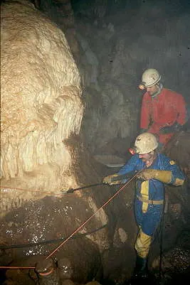

Mağaracıların Sorumlulukları

Örnek mi istiyorsunuz? Aşağıdaki maddeler Belçikalı Speleoclub Avalon’un web sayfasından özetlenerek alındı. Orijinalini şurada bulabilirsiniz:
http://www.scavalon.be/avalonuk/protection/avalonview.htm
Tamam, kabul ediyoruz, bunlar bize üç numara bol gelecek kurallar. Ama, küçücük bir ülkede yaşayan sıradan bir mağaracılık kulübünün üyelerinin mağaralara ve doğaya yaklaşımını göstermesi açısından mükemmel bir örnek:
- “Biz Belçika’da karpit lambası kullanmayız. Çünkü karpit son derece kirleticidir. Bu kelime ile karpit çöpünün kasdedildiği zannedilse de aslında karpit çöpünü mağara dışına çıkartmak çok kolaydır. Asıl zararlı olan karpitin isidir. Bu is, hava akımı ile yüzlerce metreye varan uzaklıklara taşınabilir. Sürekli olarak karpitli mağaracılar tarafından ziyaret edilen bazı mağaraların girilmemiş galerinin bile bu is yüzünden simsiyah hale geldiğine şahidiz.”
- “Biz mağara oluşumlarına itinalı davranırız. Çamurlu çizmelerimizle üstlerine basmaz, fazla dokunmaz ve emniyetli bir uzaklık bırakırız. Eğer temas kaçınılmazsa çizmelerimizi ve hatta tulumumuzu çıkartırız. Aynı kurallar güzel görünümlü sedimentasyonlar (örneğin çamur oluşumlu zeminler) için de geçerlidir.”
- “Biz tüm “Kazma” ve “Açma” faaliyetlerinde sağduyulu davranırız. Asıl önemli olan keşif değil, mağaranın kendisidir. Dolayısıyla bazı keşiflerimizde yolu tıkayan bir oluşum dolayısıyla veya döşeme sırasında oluşumlar zarar göreceği için mağaranın belirli kısımlarını araştırmadığımız olmuştur. Kazma işlemi “kayıp – kazanç” hesabı ile yapılır. Kulübümüzde “kayıp” (mağaraya zarar) olabilecek en düşük düzeyde ve karşılığında alınacak kazanç ise mutlaka azami düzeyde olmalıdır. Eğer sonuçtan emin olamıyorsak araştırmayı sürdürmeyiz. Tabi ki bazen ikilemde kaldığımız oluyor. Keşfettiğimiz, çok çamurlu bir mağaranın sonunda son derece güzel oluşumlarla bezeli bir salona rastladık. Salona da “İkilem Salonu” ismini verdik. Bu ismin sebebi, bu kadar kirli bir şekilde bu salona girip araştırmayı sürdürme veya sürdürmeme kararsızlığımızdı. Sonuçta araştırmaya devam etmeme kararı verdik.”
- “Biz, kaşifin büyük bir sorumluluğu olduğunu hiçbir zaman unutmayız. Onlar gelecekte bu mağaranın korunması ve hatta varolmasından sorumludurlar. Bu cümle, keşfin daha ilk gününde tüm formasyonların şeritlerle çevrelenmesini, keşfedilen mağaraya bir kapı inşa edilmesini ve hatta bazı mağaranın önemli kısımlarının tümüyle kapatılmasını içermektedir.”
- “Biz federasyonumuzun mağaralarda rehberlik yapma kurallarını uygulamakla kalmayıp bu kuralları daha da katı bir hale getirdik. Örnek vermek gerekirse; bizler öğrenci, izci, işadamı, hiçbir gruba mağaralarda rehberlik yapmamaktayız. Yardımcı olduğumuz yegane grup mağaracılık ile gerçekten ilgilenen insanlardır ve her gezide bu insanların sayısı dördü geçmemelidir.”
- “Biz mağaranın civarında yaşayan tüm insanlara saygılıyız.”
- “Biz kulüp olarak tüm “Mağara Temizleme” faaliyetlerinde yer alır ve bunu bir görev olarak kabul ederiz.”
- “Biz keşfettiğimiz üç mağarayı “Evlat edindik" ve bunlarla ilgili olarak federasyonla özel bir anlaşma imzaladık.”